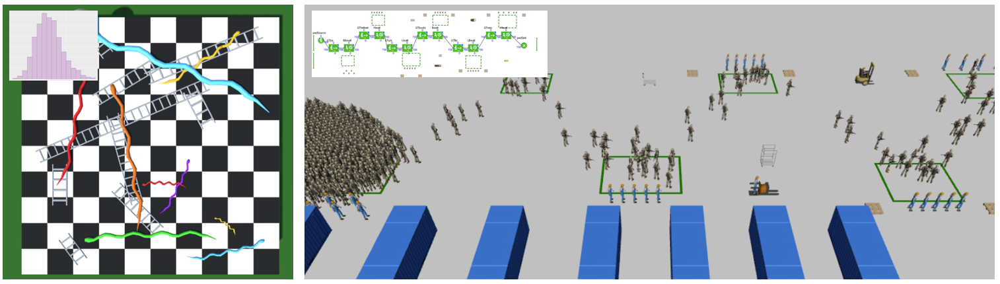
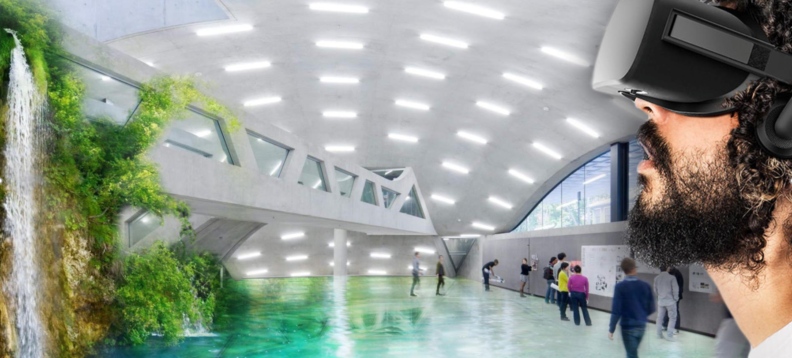
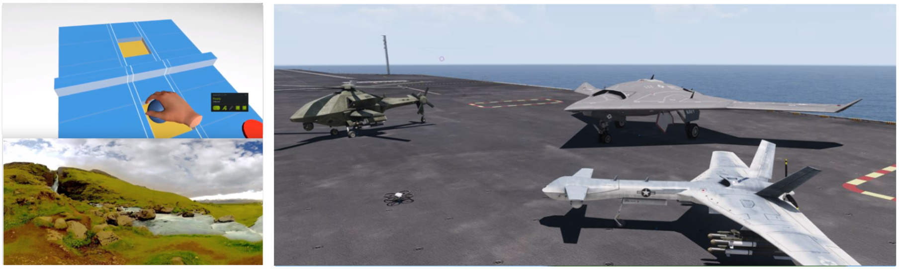
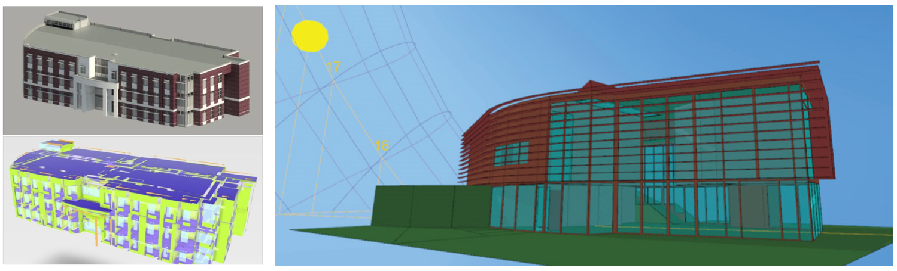

<div class="container" id="main">
<div class="row"><div class="col-xs-12 col-sm-12 col-md-10">

<BR>
The SENSEable Design Lab teaches in the Modeling and Simulation Graduate Program at UCF. The Modeling and Simulation Curriculum consists of a collection of classes that dive into the technical aspects of Modeling, Simulation, and Training. The program teaches you how to use anti-displinary tools in the people (human perception, data capture), process (human experiments, user-studies, research methodology), and technology (math, theory, programming, and algorthims) of simulation. Together, these form a comprehensive cirriculum that explores both the cognitive and technical sides of modeling and simulation.
<BR><BR>


<ul>

<li><B><h3>IDS 6145: Simulation Techniques</h3></B>
<br>
Modeling and Simulation is important in many application domains from engineering to nursing. How do we design an engaging virtual environment for training? Or model how a human and robot interact to jointly solve a task? Can we make buildings more sustainable or apply machine learning to solve challenging problems in understanding the human brain? The objective of this course is to provide a broad survey of three different categories of simulation: discrete event simulation, continuous simulation, and agent-based simulation. Material in this course will provide an overview of the foundations as well as specific example problems and simulation solutions for each category of simulation. Students will be expected to understand the basics for a variety of different types of simulations, as well as to work with hands-on simulation tools to implement solutions various problems. To fully investigate this new technology, there will be three projects - one for each category of simulation.
<BR><BR>
  <ul>
  <li><b>IDS 6145: Simulation Techniques (Fall 2019)</b></li>
  <li>IDS 6145: Simulation Techniques (Spring 2019)</li>
  <li>IDS 6145: Simulation Techniques (Spring 2018)</li>
  <li>IDS 6145: Simulation Techniques (Spring 2017)</li>
  </ul>
</li>
<HR>


<li><B><h3>IDS 6938: Mixed Reality for Modeling and Simulation</h3></B>
<br>
Design in Virtual Reality was organized as a design studio with collaboration between teams of architectural designers and computer science majors. This course investigated <i>Virtual Reality</i> under the lens of multiple disciplines (visual perception, digital photography, modeling, geometry capture, color science, display technology and computer graphics). This course dove into deep questions: How do we design a virtual environment, and how does this fully virtual environment end up changing our understanding of a future physical environment? Potential design subjects include architectural (spatial) design, product (object) design, perception experiments, medical applications, and the development and use of new graphics algorithms. A major question to be answered is whether existing real-time graphics algorithms can be used in these future immersive environments. A major thrust of the course will be to identify those areas in virtual and augmented reality systems which need to be improved to make the systems more suitable for everyday use. Current implementations do not satisfy the current demands but the concepts and potential improvements will open up new possibilities. This course recieved hardware donations from Valve, Occulus, NVIDIA, and Microsoft.
<BR><BR>
  <ul>
  <li><b>IDS 6938: Mixed Reality for Modeling and Simulation (Spring 2019)</b></li>
  <li>IDS 6938: Mixed Reality for Modeling and Simulation (Fall 2018)</li>
  <li>CS 4654: Design in Virtual Reality (Spring 2016 - Cornell University)</li>
  </ul>
</li>
<HR>

<li><B><h3>IDS 6916: Research Methods and Practicum</h3></B>
<br>
This is a project course that is included in the core for M.S. (and Ph.D.) students in Modeling and Simulation (M&S). It serves as a capstone course for M.S. students in M&S. Interdisciplinary teams of students conduct fundamental and applied research on contemporary issues in modeling, simulation, and training. The class consists of a semester long interdisciplinary team project of  3-4 students of varied academic backgrounds with weekly discussions on topics on qualitative, quantitative, and mixed-methods research design. 
<BR><BR>
  <ul>
  <li><b>IDS 6916: Research Methods and Practicum (Fall 2019)</b></li>
  <li>IDS 6916: Research Methods and Practicum (Fall 2018)</li>
  </ul>
</li>
<HR>


<li><B><h3>IDS 6938: Building Performance Simulation (Seminar)</h3></B>
<br>
Recent advancements in computer technology allow building performance simulation to be a central part of the design process. This course focuses on basic and advanced building performance simulation methods and their underlying principles. 
We will look at simulations that impact energy, thermal, and visual comfort with a strong emphasis on building simulation tools. Innovative techniques on how to use these models in a building's design will be explored. This course will provide students intuition on how we code and design virtual environments, and how these virtual environments end up changing our understanding of a future physical environment. 
This class is set up as an interdisciplinary seminar with a strong focus on a variety of backgrounds: computer science, human factors, applied mathematics, architecture, smart building design and electrical engineering.
<BR><BR>
  <ul>
  <li>IDS 6938: Building Performance Simulation (Fall 2017)</li>
  <li>IDS 6938: Building Performance Simulation (Fall 2016)</li>
  </ul><BR><BR>
</li>
<HR>

</ul>
</div></div>
</div>


    </div>